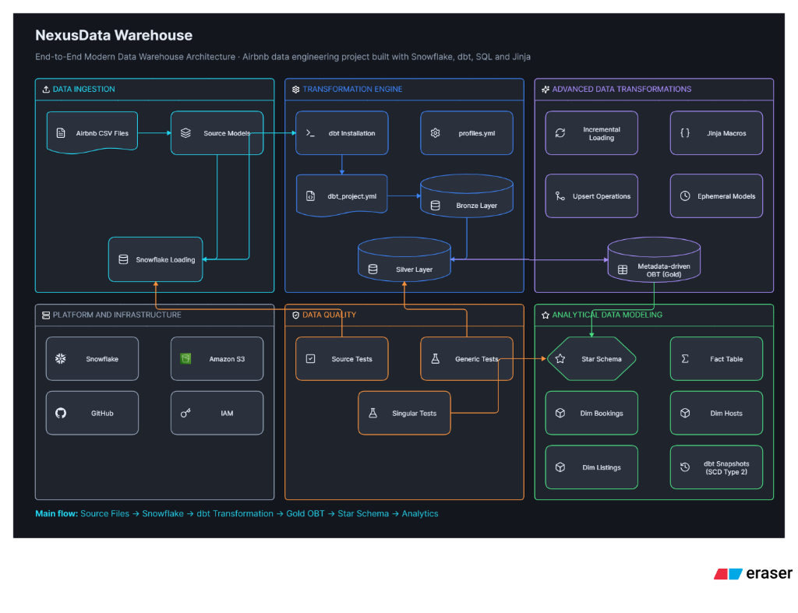

NexusData Warehouse
Cloud Data Platform & Analytics Engineering- Architected an end-to-end data pipeline implementing medallion architecture (Bronze, Silver, Gold layers) for processing large-scale transactional and operational data.
- Configured secure data ingestion from AWS S3 data lakes to Snowflake utilizing external stages, customized file formats, and robust IAM security protocols.
- Utilized DBT Core (CLI) and Jinja templates/macros to build dynamic, parameter-driven transformation pipelines and implement incremental data loading strategies.
- Designed downstream analytical data models including One Big Table (OBT) and Star Schema architectures with Slowly Changing Dimensions (SCD Type 2).
- Code & Models available at github.com/harshil28006 ↗.
$
view_pipeline --spec="nexusdata_warehouse_architecture.png"
High-Res ↗
